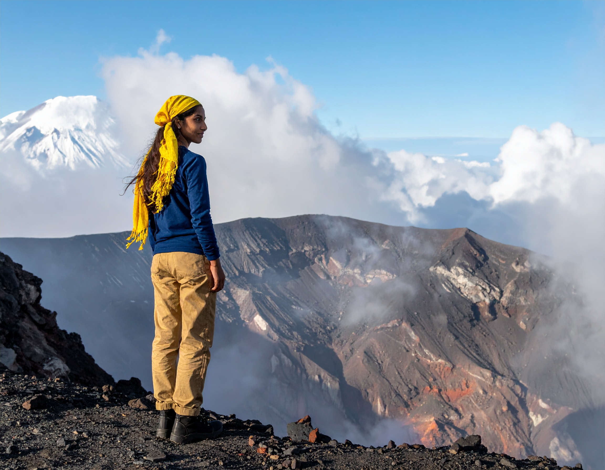
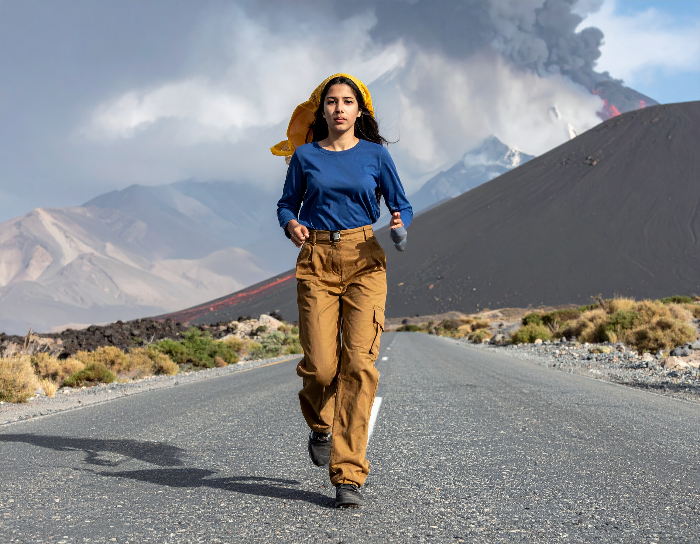
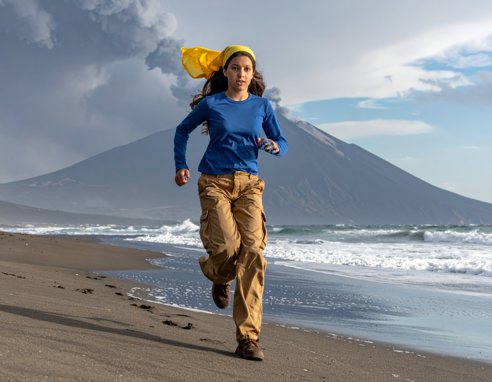

 | Patricia is a teenage girl of Pakistani heritage with an olive complexion, brown eyes, and long brown hair. She wears long tan cargo pants and a blue long-sleeved shirt. As she stands by an active volcano, she feels a deep rumble beneath her feet and knows the volcano is about to explode. Panic sets in as she looks around. She must decide quickly – should she run to the road where it's safer or head to the ocean for a chance to escape the danger? |
 |  |
|
| Run to The Road | Run to The Ocean |